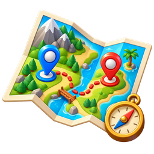
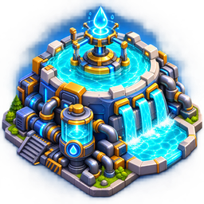
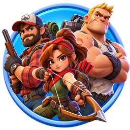
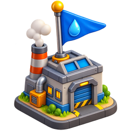
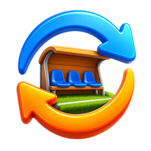
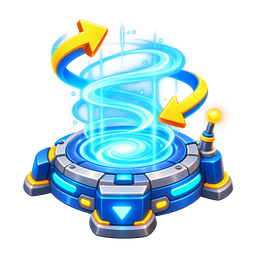

Карта боя
Тапай по меткам
Синие метки с буквами — наши здания: на них стоят группы А–Е, состав виден прямо на карте (приблизь или тапни метку). Зелёные — бочки, общая группа 3. Красные — точки противника.
Группы и задачи
Тап — свернутьГруппа 1 · Ударная4 основы + 4 помощника +
Назначение — сбивать таймер точек захвата весь ивент, двигаясь по часовой стрелке. Летаем по карте, помогаем остальным и друг другу выбивать сильных противников.
Суммарная сила первых отрядов «основа + помощник» уравновешена: самый слабый помощник идёт к самому сильному игроку и т.д. Если основу жгут — помощник первым отрядом заходит к нему в гарнизон. Если помощь не нужна — помощник сбивает противников с бочек.
Захват точки — 2 мин 40 сек. Когда до конца вражеского захвата остаётся 60 сек — сильный с помощником делают ТП и летят сбивать таймер.
Группа 2 · ЗащитаКонтроль зданий +
Обеспечиваем контроль захваченных зданий. Приоритет — вертолетная площадка и военный завод: на каждом по три сильных игрока.
Распределяемся по 2–3 человека, в каждой связке — один защищающий: он следит за гарнизоном и обновляет его релоком, если в гарнизоне меньше 50% — отошёл в сторону, вода качается дальше, а в гарнизон идёт уже полный отряд. Остальные 1–2 человека сжигают противника или выигрывают время на переотправку.
Если жгут: 1 и 2 дома, 3-й в гарнизон. Если не жгут: в гарнизон 1 отряд, галочки на 2 и 3.
Группа 3 · ФармКачаем бочки +
До появления бочек — смотрим на карту и летим туда, где больше всего боёв: сжигаем противников, садимся в гарнизоны, помогаем захватывать здания. Задача — набить 180 000 личных очков: сидя на бочках, такой возможности не будет.
После появления бочек сидим только на бочках, отрядами 2–5.

Центральный резервуар
Два сценарияСценарий 1
Самый сильный игрок и его помощник в состоянии самостоятельно удержать центральный резервуар у противника.
Центр держимСценарий 2
Самый сильный игрок и его помощник летят только сбивать время захвата. Дальше перемещаются на необходимые объекты — и там так же сбивают время.
Сбиваем время, не удерживаем
Распределение игроков
Баланс по силам| Игрок | Группа | I | II | III |
|---|
I, II, III — сила отрядов · ✓ — отряд с галкой: остаётся на воротах · синяя буква — группа по точкам (А–Е)

Назначение по точкам
Авто по силе · тапни двух — поменяютсяГруппа 2 · кто где стоит
Группа 1 · пары для сбития

Резерв · замены
Каждый выходит 1 разЗамена делается один раз за ивент. Каждому резервисту уже подобран ближайший по силе I отряда игрок — тапни «Заменить», и резервист встанет в таблицу, на точку и в пары вместо выбывшего.

Схема телепортации
Тапай по шагамПеред боем
Чек-листОбщие правила
Всё только по плануДелаем
- Группы 2 и 3 держат свои точки — бочки и точки захвата не покидаем.
- Сбитие — только группа 1, строго по часовой стрелке.
- Читаем чат рейда — он открывается в момент начала резервуара.
- Защищающий обновляет гарнизон релоком, если в нём меньше 50%.
- Захват точки — 2 мин 40 сек: за 60 сек до конца вражеского захвата сильный с помощником летят сбивать таймер.
- Телепортируемся по таймеру — бесплатно / 1 релокатор / бесплатно.
Не делаем
- Никуда с точек не бежим и никого не спасаем — всё только по плану.
- Группы 2 и 3 не летят на помощь — за помощь отвечает группа 1.
- Группа 3 не ставит 1-й отряд на бочки — собьётся сбор с нескольких точек.
- Не заходим без глушителя разведки — ни один игрок.
- Не тратим алмазы на телепорты — есть бесконечная схема с релокаторами.